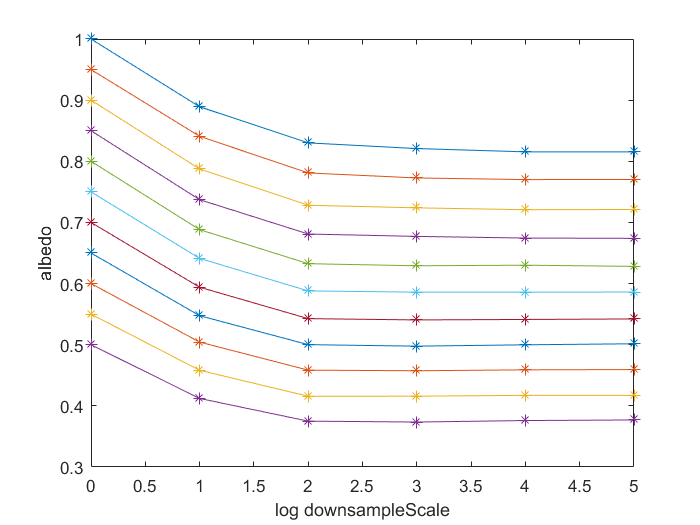

**Multires 2D Test** *Guo Yu* *update on*: 2016.12.15 Welcome to Markdeep. Section === $$\sum_{x=1}^N a_x$$ Subsection --- ![Figure [robot]: A picture of a robot. ](results/figure10-1-rand-albedo.png width="540") 